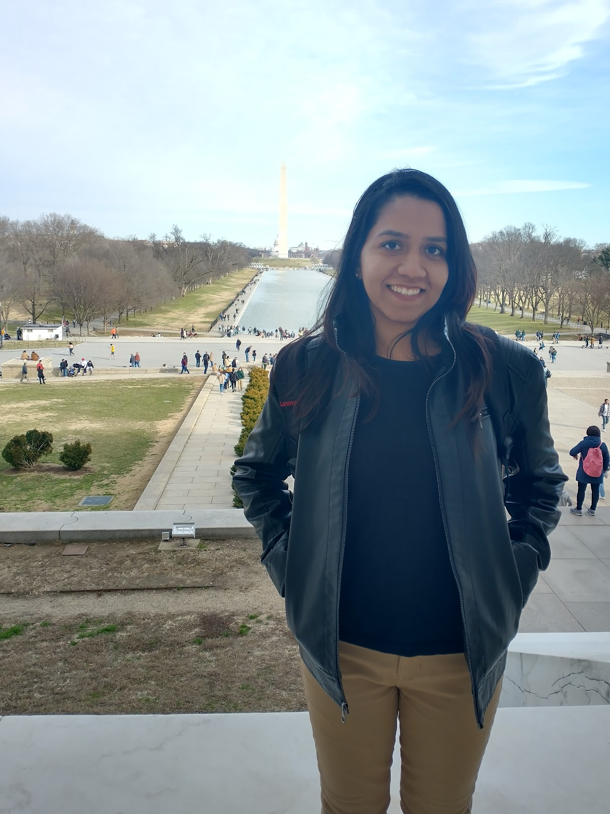

First author · JWST · 2026
Jet-driven H₂ and ionized outflows in 3C 305
JWST resolves shocks, warm molecular outflows, and faster ionized outflows where the compact radio jet terminates inside the galaxy.
Read the paper ↗Postdoctoral Fellow · STScI
I’m Dr. Biny Sebastian, an observational astrophysicist studying active galactic nuclei, jet–interstellar medium interactions, and galaxy evolution through radio interferometry and spatially resolved spectroscopy.

Current focus
At the Space Telescope Science Institute, I work with Dr. Patrick Ogle on JWST integral-field spectroscopy of radio galaxies. We map shocked molecular and ionized gas, outflows, and the energetics of jet–ISM interaction.
Previously, I contributed to the CIRADA collaboration at the University of Manitoba, developing radio-continuum processing pipelines and science-ready products for surveys including VLASS. I earned my PhD at NCRA–TIFR with Prof. Preeti Kharb.
Selected work
JWST resolves shocks, warm molecular outflows, and faster ionized outflows where the compact radio jet terminates inside the galaxy.
Read the paper ↗Resolving a jet-driven coronal outflow and the complex coupling between an iconic radio source and its host galaxy.
Read the paper ↗Radio polarization maps uncover ordered magnetic-field structures in and around outflows from radio-quiet active galaxies.
Read the paper ↗Collaborate